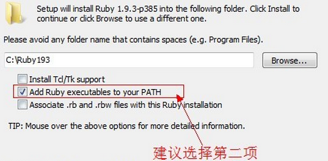
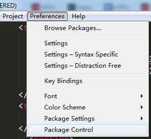
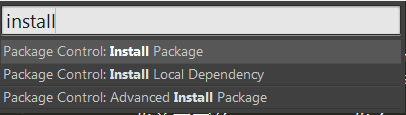
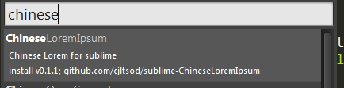
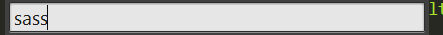
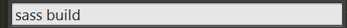
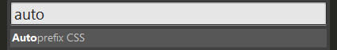
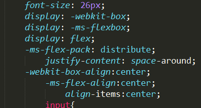

【CSS-task11】sass与sublime的基础配置
小课堂【郑州第28期】
分享人：安文杰
目录
1.背景介绍
2.知识剖析
3.常见问题
4.解决方案
5.编码实战
6.扩展思考
7.参考文献
8.更多讨论
1.背景介绍
1.1sass背景
2007年诞生，最早也是最成熟的CSS预处理器，拥有ruby社区的支持和compass这一最强大的css框架，目前受LESS影响，已经进化到了全面兼容CSS的SCSS。
1.2为什么选sass？
- Sass也是成熟的CSS预处理器之一，而且有一个稳定，强大的团队在维护
- 世界范围内sass社区更成熟，参考教程更多
- 更像一种语言，对javascript学习思维转换可以做一个铺垫
- Sass在市面上有一些成熟的框架，比如说Compass
- Sass功能上更强大，适合开发大型项目
1.3sublime背景
Sublime Text 是一个代码编辑器（Sublime 是收费软件，但可以无限期试用），也是HTML和散文先进的文本编辑器。Sublime Text是由程序员Jon Skinner于2008年1月份所开发出来，它最初被设计为一个具有丰富扩展功能的Vim。
1.4sublime优点
- 轻量级——瞬时打开
- 插件非常丰富，甚至可以自己DIY，支持几乎所有语言
- 编辑状态恢复功能，突然断电？系统崩溃？No!
- 外观，主题漂亮，甚至DIY
2.知识剖析


gem install sass3.常见问题
- sass安装失败
- 英文差，界面不会操作？
- 命令行编译sass文件太麻烦？
4.解决方案
由于墙的问题！
https://rubygems.org/search?utf8=✓&query=sass 下载安装包
gem install+(手动直接拖入安装包)//然后回车即是安装preferences菜单下有无package control； 
view菜单下面的show console指令
5.编码实战
ctrl+shift+p:

中文插件如下：

对应sass编译插件:

sass文件保存立即编译插件：
强大的浏览器前缀插件:Autoprefixer



如果编译失败，可能由于注释有中文情况
下载Everything.exe，找到engine.rb文件，用sublime打开并插入
Encoding.default_external = Encoding.find('utf-8');6.扩展思考
compass框架与sass如何结合使用？
怎么定制sublime的插件以及更换颜色主题
7.参考文献
参考W3cplus
8.更多讨论
讨论:
sass的缺点有什么
sublime的缺点有什么
鸣谢
感谢大家观看
BY : 沁修 | 安文杰